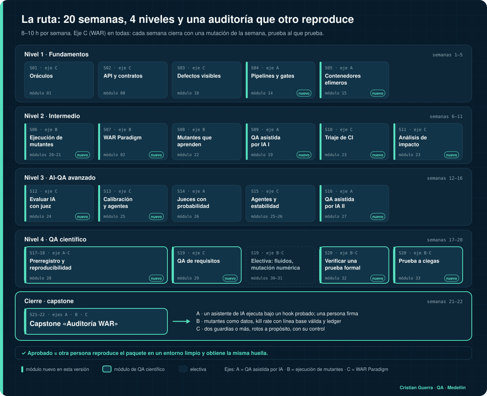

Cómo te evalúas
Este sitio no tiene servidor ni profesor que corrija por ti. La evaluación es tuya y se apoya en evidencia que puedes mostrar: comandos, hashes, capturas y tu repo. Aquí está la regla completa. ← Volver al curso
Qué trae cada módulo
🎯 Objetivos y prerrequisitos
Qué vas a poder hacer al terminar, en verbos que se pueden comprobar, y qué necesitas antes de empezar.
📓 Teoría corta + 🧪 laboratorio
La teoría justa y un laboratorio práctico. En los módulos nuevos, el laboratorio es un repo público real.
🧠 Quiz autocorregible
8 preguntas al azar del banco del módulo (entre 8 y 18 por módulo), una respuesta por pregunta y la explicación de cada una. Apruebas con 6 de 8. Cada intento saca otras preguntas.
✅ Reto con criterios verificables
Criterios que se comprueban con un comando o una captura, no con una opinión. Ejemplos: “tu suite mata al menos 5 de 6 mutantes y el reporte JSON trae hashes”, “tu juez tiene un kappa ≥ 0.6 contra tus etiquetas”, “un PR con un fallo queda bloqueado para merge”.
📏 Rúbrica de 4 niveles
1 · No cumple · 2 · En camino · 3 · Aprobado · 4 · Sobresaliente. El nivel 4 de cada módulo pide algo concreto de más.
🧬 Mutación de la semana
Rompes algo a propósito en tu propio trabajo y demuestras que tu chequeo lo nota, o publicas que no lo nota. Es el hilo WAR: prueba al que prueba.
Cuándo apruebas
Un módulo: quiz ≥ 6/8 y reto en el nivel 3 de la rúbrica (todos los criterios cumplidos). Entonces marcas el ✅ del entregable.
El examen final: 26 preguntas de escenario que cruzan todo el curso; se aprueba con 80 %.
El capstone «Auditoría WAR»: las cuatro filas de la rúbrica integrada al menos en el nivel 3, y otra persona reproduce tu paquete en un entorno limpio con exit 0 y la misma huella.
Tu avance, tu mejor puntaje en cada quiz y tu examen se guardan en tu cuenta de Google si entras con ella, o solo en este navegador (localStorage) si entras como invitado. Al iniciar sesión, lo hecho como invitado se suma a tu cuenta.
Qué es evidencia y qué no
| Cuenta como evidencia | No cuenta |
|---|---|
| ✓ Sí: el comando exacto, su salida y su exit code, guardados como salieron. | ✗ No: «me funcionó», o una captura sin el comando que la produjo. |
| ✓ Sí: un SHA-256 o una huella que otra persona recalcula y le da igual. | ✗ No: un log que existe pero que nadie puede atar a la corrida que lo produjo. |
✓ Sí: el orden en git log: prerregistro, después datos, después resultados. | ✗ No: un umbral que se movió después de ver el puntaje, aunque el nuevo «tenga más sentido». |
| ✓ Sí: un control que debe pasar y otro que debe fallar, con los dos resultados. | ✗ No: una suite verde que nunca viste fallar. |
| ✓ Sí: una hipótesis que falló, publicada con su número. | ✗ No: borrar la hipótesis que falló o cambiar el criterio para que pase. |
| ✓ Sí: la reproducción de otra persona, publicada tal cual, aunque le salga distinto. | ! Ojo: tu propia reproducción en otra máquina tuya, o una que operó un asistente, vale como «reproducido», no como «reproducido por un tercero». Se dice así en Límites. |
Cómo comprobar tus propios criterios
- Orden en el tiempo:
git log --reverse --format="%h %ad %s" --date=iso. - Umbrales intactos:
git log -p -- thresholds.jsonno muestra cambios después de la primera corrida. - Exit code: termina cada comando con
; echo "exit=$?"y guarda la salida. - Hashes:
shasum -a 256 archivo, oshasum -a 256 -c SHA256SUMSpara una lista. - Huella en dos entornos: un job de CI con matriz que haga
grep -q "fingerprint: XXXX-XXXX-XXXX", como elverify.ymlde predictor-debugger. - Entorno limpio: un runner nuevo de CI o un contenedor que nace y muere con el comando, por ejemplo
docker run --rm -v "$PWD":/w -w /w python:3.12-slim python3 verificar.py.
Rúbrica de cada módulo
| 1 · No cumple | 2 · En camino | 3 · Aprobado | 4 · Sobresaliente |
|---|---|---|---|
| Falta el entregable o no corre. | Corre, pero falla al menos un criterio de aprobación. | Cumple todos los criterios de aprobación. | Cumple todo y además el extra que pide ese módulo. |
Los módulos más nuevos traen una rúbrica por ejes: cuatro filas, cada una con estos cuatro niveles. Ahí el aprobado es tener las cuatro filas al menos en el nivel 3.
Rúbrica integrada del capstone «Auditoría WAR»
Una fila por eje del curso, más la evidencia. Aprobado = las cuatro filas al menos en el nivel 3.
| Eje | 1 · No cumple | 2 · En camino | 3 · Aprobado | 4 · Sobresaliente |
|---|---|---|---|---|
| QA asistida por IA | El asistente ejecutó sin registro, o las reglas viven solo en el prompt. | Hay registro de sesiones, pero faltan comandos, exit codes o hashes, o el hook no tiene suite de ataques. | Hook o gate con suite de ataques en CI (exit 0); receipts.jsonl con cada comando, exit code y SHA-256; diff revisado por una persona y trailer Co-Authored-By en los commits del asistente. | Además, revisión doble a ciegas (dos revisores que no ven el trabajo del otro y un corrector acotado) y sección «Qué no se ejecutó». |
| Ejecución de mutantes | No hay mutantes o no hay línea base. | Hay mutantes, pero el kill rate cuenta fallos de infraestructura o de línea base, o falta el ledger. | Al menos 6 mutantes como datos, con un cambio cada uno; línea base válida; kill rate recalculable desde el JSON; cada SURVIVED en el ledger con causa; modo estricto que hace fallar al sobreviviente. | Además, el ledger prioriza la siguiente corrida y hay una ronda a ciegas con compromiso por hash verificada con shasum -a 256. |
| WAR Paradigm | Solo se prueba el producto, nunca los guardias. | Se prueba un solo guardia (la suite o el juez). | Se prueban al menos dos guardias distintos (suite, juez, hook, gate o verificador de evidencia), cada uno con un control que debe pasar y otro que debe fallar, con su comando y exit code. | Además, se publica un guardia que falló (un sobreviviente o un falso verde) y qué cambió después, sin mover umbrales. |
| Evidencia y reproducción | Afirmaciones sin un comando que las produzca. | Evidencia parcial, prerregistro posterior a los datos o huella distinta entre entornos. | Prerregistro anterior a los datos; lockfile y --locked o npm ci; misma huella en CI y en tu máquina; otra persona reproduce en un entorno limpio con exit 0 y la misma huella; README con Límites y Qué me contradiría. | Además, quien reproduce no tiene relación con el proyecto, usa otro sistema operativo y su reporte queda publicado tal cual, con las diferencias que encontró. |
La ruta
La ruta completa tiene 35 módulos. Los números de abajo son los del mapa del curso.

Completa, desde cero: los 35 módulos en orden, unas 37 semanas a 10–12 h por semana.
20 semanas, si ya automatizas pruebas de UI o API. Cada tarjeta dice qué módulo trabajar esa semana.

12 semanas: semanas 1 a 5 como en la ruta de 20 (módulos 01, 08, 10, 14 y 15); semana 6, módulos 21 y 02 juntos; luego 19, 24, 25, 27 y dos semanas para el 28 (prerregistro, controles, huellas y reproducibilidad). Los módulos 29 a 33 quedan como electiva de QA científico, y el capstone, para cuando termines.
Honestidad
Nadie revisa tus respuestas desde un servidor. Si marcas un ✅ sin evidencia, solo te engañas a ti. La regla del curso aplica también aquí: un verde solo vale si sabes que habría salido rojo cuando algo estaba mal.
Ruta QA Automation · guiada por Cristian Guerra Gómez · contenido CC BY 4.0, código MIT.